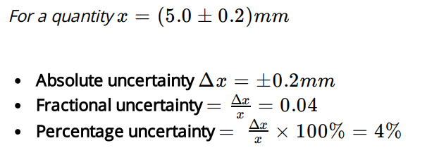
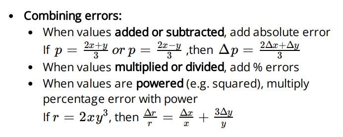

PRESIDENTIAL SCHOOL IN NAMANGAN
Topics
1. Physical quantities
2. SI units
3. Errors and uncertainties
4. Scalars and vectors
Errors and uncertainties
Systematic errors:
Constant error in one direction; too big or too small
Cannot be eliminated by repeating or averaging
If systematic error is small, measurement is accurate
Accuracy:
refers to degree of agreement between result of a measurement and true value of quantity
Random errors:
Random fluctuations or scatter about a true value
Can be reduced by repeating and averaging
When random error is small, measurement is precise
Precision:
refers to degree of agreement of repeated measurements of the same quantity (regardless of whether it is close to true value or not)
 
<< Previous topic
Next topic >>